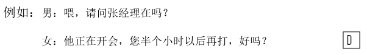
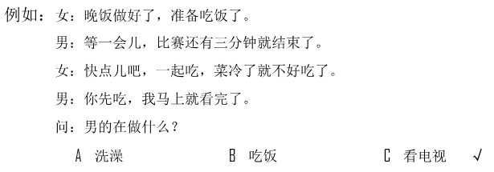
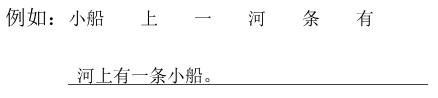
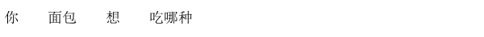

🎧 Phần nghe · Câu 1–40
Bấm phát để bắt đầu nghe. Thời gian làm bài bắt đầu khi bạn nghe hoặc chọn đáp án.
Nghe · Phần 1 · Câu 1–5
Nghe và chọn hình A–F phù hợp.

Nghe · Phần 1 · Câu 6–10
Nghe và chọn hình A–E phù hợp.
Nghe · Phần 2 · Câu 11–20
Nghe và chọn ✓ (đúng) hoặc × (sai).

Câu 11
★他在请人回答问题。
Câu 12
★那位小姐要去8层。
Câu 13
★手表进水了。
Câu 14
★他终于找到那本书了。
Câu 15
★他现在住在黄河附近。
Câu 16
★他喜欢边跑步边听音乐。
Câu 17
★冬天鸟会飞到北方。
Câu 18
★他买的东西还没送到。
Câu 19
★他不认识那个女孩儿。
Câu 20
★他最爱吃那儿的面条儿。
Nghe · Phần 3 · Câu 21–30
Nghe và chọn đáp án A, B hoặc C.

Câu 21
Câu 22
Câu 23
Câu 24
Câu 25
Câu 26
Câu 27
Câu 28
Câu 29
Câu 30
Nghe · Phần 4 · Câu 31–40
Nghe hội thoại và chọn đáp án A, B hoặc C.

Câu 31
Câu 32
Câu 33
Câu 34
Câu 35
Câu 36
Câu 37
Câu 38
Câu 39
Câu 40
Đọc · Phần 1 · Câu 41–45
Chọn câu A–F phù hợp để ghép với từng câu.
Đọc · Phần 1 · Câu 46–50
Chọn câu A–E phù hợp để ghép với từng câu.
Đọc · Phần 2 · Câu 51–55
Chọn từ A–F điền vào chỗ trống.
Đọc · Phần 2 · Câu 56–60
Chọn từ A–F điền vào chỗ trống của hội thoại.

Đọc · Phần 3 · Câu 61–70
Đọc đoạn văn và chọn đáp án đúng.

Câu 61
你说中间那个碗？它有好几百年的历史了，听说现在最少能卖到一万元呢。
★那个碗：
★那个碗：
Câu 62
他们最后还是决定坐船去，虽然比火车慢了6个小时，要第二天中午才能到，但是船票比火车票便宜很多。
★他们认为：
★他们认为：
Câu 63
我办公室的电脑突然不能用了，你等会儿叫小张过来帮我看一下。对了，我下午要出去，不在公司，有什么事就给我发电子邮件或者打我手机。
★他下午：
★他下午：
Câu 64
我教你一个办法。工作前，先把要做的事情写下来，重要的、着急的事情用红笔画出来，这样你就能清楚地知道应该先做什么、后做什么了。
★根据这段话，可以知道：
★根据这段话，可以知道：
Câu 65
我们周末要去南京旅游，听说南京现在比我们这儿热多了，都可以穿裙子了。
★他们这儿现在：
★他们这儿现在：
Câu 66
这几年，她的汉语水平提高了不少，对中国的了解也越来越多，这跟她经常看中文报纸和电影有很大关系。
★关于她，可以知道：
★关于她，可以知道：
Câu 67
邻居张爷爷是小学校长。他每天都第一个到学校，最后一个离开。他常说，如果工作是你自己感兴趣的，再累也是快乐的。
★张爷爷：
★张爷爷：
Câu 68
这个空调用了5年了，几乎没出过什么问题。但女儿担心它声音太大，晚上会影响我和她爸爸休息，所以一定要给我们换个新的。
★根据这段话，女儿：
★根据这段话，女儿：
Câu 69
这个地方的茶特别有名，每年秋季还有一次茶文化节，很多人都会来参加，有些还是从国外来的朋友。
★那个地方：
★那个地方：
Câu 70
出国留学对很多年轻人来说是一种锻炼。因为一个人在国外，不但要学会照顾自己，而且还要学着去解决自己以前没遇到过的问题。
★这段话主要想告诉我们，去国外留学：
★这段话主要想告诉我们，去国外留学：
Viết · Phần 1 · Câu 71–75
Sắp xếp các từ đã cho thành câu hoàn chỉnh.
Phần viết được đối chiếu với đáp án mẫu; bỏ qua khoảng trắng và dấu câu. Điểm hiển thị là điểm luyện tập.

Câu 71
Câu 72

Câu 73
Câu 74
Câu 75
Viết · Phần 2 · Câu 76–80
Nhập chữ Hán phù hợp với pinyin vào từng ô trống.